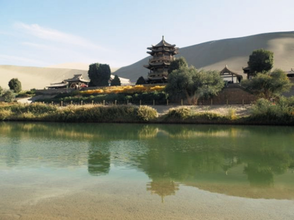

徒步丹巴吉林丨相约探寻沙山明湖 同行穿越黄沙星辰

各地-兰州-金昌-丹巴吉林沙漠-金昌-兰州-各地
- 篝火露营
- 沙漠穿越
5天4夜
3.5小时
世界第四大沙漠，成就团队坚韧之心
仰望鸣沙之王 翻越巨型沙丘 看广漠希望之泉
篝火露营，漫天星辰，畅享不一样的夜
仰望鸣沙之王 翻越巨型沙丘 看广漠希望之泉
篝火露营，漫天星辰，畅享不一样的夜

【产品亮点】
徒步丹巴吉林沙漠，近年来广受旅游大众的青睐，是一条别具一格的沙漠徒步线路，非常的适合成熟型团队前来挑战，广阔的大漠中，小小的团队如一叶沙浪扁舟，也正因如此，锻炼和展现了团队的风采，一路挺近，困难重重中的相互扶持，看见广漠夕阳的惊叹，遇见明湖是的兴奋，篝火晚会一同歌唱，穿越沙漠回头看——广漠中留下的光辉印迹，这就是团队的力量！
徒步丹巴吉林沙漠，近年来广受旅游大众的青睐，是一条别具一格的沙漠徒步线路，非常的适合成熟型团队前来挑战，广阔的大漠中，小小的团队如一叶沙浪扁舟，也正因如此，锻炼和展现了团队的风采，一路挺近，困难重重中的相互扶持，看见广漠夕阳的惊叹，遇见明湖是的兴奋，篝火晚会一同歌唱，穿越沙漠回头看——广漠中留下的光辉印迹，这就是团队的力量！

【行程介绍】
巴丹吉林沙漠总面积4.7万平方公里，是世界第四大沙漠、我国第三大沙漠，在右旗境内面积为3.5万平方公里。巴丹吉林沙漠以“奇峰、鸣沙、湖泊、神泉、古庙”五绝著称。海拔高度一般在1100—1600多米，沙峰相对高度在200—500米之间。高大沙山占整个沙漠面积的61%。在沙漠腹地，有规则排列的巨大复合型沙丘连绵不绝，沙峰林立，宛如海啸卷起的巨浪，气势蔚为壮观。沙山顶端，蜿蜒曲折如刀刃，沙壑纵横，沙壁如削。
巴丹吉林沙漠总面积4.7万平方公里，是世界第四大沙漠、我国第三大沙漠，在右旗境内面积为3.5万平方公里。巴丹吉林沙漠以“奇峰、鸣沙、湖泊、神泉、古庙”五绝著称。海拔高度一般在1100—1600多米，沙峰相对高度在200—500米之间。高大沙山占整个沙漠面积的61%。在沙漠腹地，有规则排列的巨大复合型沙丘连绵不绝，沙峰林立，宛如海啸卷起的巨浪，气势蔚为壮观。沙山顶端，蜿蜒曲折如刀刃，沙壑纵横，沙壁如削。

【行程安排】
Day1:各地—兰州—金昌
按照各地航班，到达中川机场之后，转机飞往金川机场，按航班到达时间安排工作人员接机，之后入住酒店，自由活动。主要是以调整、休息为主；
住宿：金昌锦都国际大酒店
用餐：酒店用餐
金昌锦都国际酒店位于金昌市上海路，邻近新华大道，周边有金川公园，交通便利。酒店总经营面积25000平方米，主体青砖红瓦，透露出高贵、厚重、大气、典雅的中华民族传统建筑风格。一层大堂建筑宏伟俊秀。主楼3至8楼为客房区域，其中7至8楼为无烟客房，拥有豪华单人间、豪华双人间、豪华套房、行政套房，客房内装修时尚、古典、配置齐全，让您居住空间无压抑。70余种丰盛的自助早餐，让您享受美味与健康。
金昌—沙漠地质公园（沙漠入口）—巴丹湖（行走距离10.3KM）
酒店早餐后，整理好自己的行李上大巴车前往沙漠地质公园，途径雅布赖盐场，来到沙漠地质公园（沙漠入口），和教练一起做做运动，舒展四肢，轻装上阵（带上途中需要使用的必备品：水），开始出发啦！第一天看见一望无际的沙漠，相信大家都是万分激动的，那么我们就怀着鸡冻的心情冲向我们的第一个目标—巴丹湖！
巴丹湖位于巴丹吉林沙漠南缘的沙山中，距沙漠地质公园16公里。在巴丹主沙峰的北侧，有一直径约50米的圆形咸水小湖，四周被百米以上的陡峭沙山紧紧环抱，宛如一颗璀璨的明珠深深嵌在沙山中，被当地人誉为“大漠天池”。相传在几百年前，有一个名叫巴岱的牧人，迷路闯进了大漠中，发现了一处水草丰盛、风光秀丽的地方，故后人把沙漠中发现的第一个湖泊命名为巴丹湖。
用餐：午餐：路餐，晚餐：搭伙做饭
住宿：沙漠营地，大本营帐篷,在沙漠中浪了一天，这一天也是大家适应沙漠徒步的第一天，晚上就不折腾了，吃完饭在舒适的帐篷里好好休息吧，静静的听听风卷起沙尘的嗦嗦声。在漫天繁星的掩盖下，大家一起分享第一天的沙漠初体验，也不可以拍一点沙漠与闪闪星空交接的奇景。感受一下踮起脚尖就可以触摸星辰的妙不可言。

Day3 巴丹湖—宝日陶勒盖（行走距离13.8KM）
起床洗漱，早饭，之后收拾装备准备出发，徒步时间为6-7小时，下午到宝日陶勒盖。宝日陶勒盖无手机信号和有淡水供应。
- 鸣沙之王——宝日陶勒盖鸣沙山
位于巴丹吉林沙漠边缘地带，距沙漠地质公园北约50公里。这里的鸣沙高达200多米，从沙脊处用双手拨动沙坡向下滑行，可发出飞机轰鸣和雷声般的“隆隆”声，数公里外清晰可闻，甚至用手指划写也可发出滋滋声响，这种现象在中外自然景观中也属罕见。鸣沙山底有清澈的淡水湖，湖水明净清爽，泉水潺潺，微风怡人。

用餐：午餐：路餐，晚餐：篝火晚会烤全羊住宿：住宿：沙漠营地，大本营帐篷。
欣赏完“大漠孤烟直，长河落日圆”的沙漠壮阔之景，悄悄的夜幕降临，那么我们的狂欢之夜也即将拉开帷幕。男女搭配，干活不累！大家一起动起来，找好柴火，后勤人员的新鲜全羊已经呈上来了，大家准备烤起来！在羊肉飘香的篝火边，跳聊天跳舞高歌一曲，大口喝酒大口吃肉。温馨又不失豪迈之感，也许只有在这星辰大漠篝火的意境中才能深刻体会……
Day4 宝日陶勒盖—沙漠地质公园（沙漠入口）（行走距离20KM）
起床吃好早餐之后，准备好出发，胜利在望，今天我们就要成功穿越丹巴吉林大沙漠了，这可是世界第4大沙漠，是不是特别的有成就感！团结就是力量，随着大家每日的一路同行，相互鼓励前行，相互默契的不断提升，我们的进程也越来越顺利，所以我们今天的任务是下午五点截止穿越沙漠20里，完成我们的光辉探索沙漠之旅！徒步时间为6-7小时。加油！


Day5 金昌-兰州-各地
早上睡到自然醒，收拾好自己的行李，上大巴送大家前往机场，返程回家啦！想要了解一下兰州风情的朋友，可以根据自己的航班时间自行安排。希望下次的奇妙之旅还能遇见你！

【注意事项】
1、背包：需要两个，一个用来托运装备（50升左右），一个 用来徒步过程中背负（30升左右）
2、睡袋：睡袋（务必达到-20度）
3、鞋袜：建议高帮防水鞋，且鞋表面无网眼，厚袜子不少于2双，鞋脚要充分磨合
4、服装：速干排汗、抓绒、冲锋衣，内衣两套，外装换洗一套
5、手杖：建议2只，可以节省不少体力，同时保护膝盖（建议搭配护膝使用）
6、帽子：带沿帽为佳、或者头巾，可以防风、防晒
7、太阳镜：镜片最好能防紫外线
8、润唇膏、防晒霜
9、头灯：一定要充好电和备用电池
10、水壶、水瓶、水袋均可
11、照相机选备、手台选备；相机一定要做好防沙措施
12、魔术头巾：两块，可以擦汗防沙
13、餐具：碗筷、汤碗及汤勺
【出行守则】
1，健康提醒：根据活动的难易程度，评估您是否适合参加户外运动。
2，安全原则：户外活动中听从领队指挥。正确使用户外用具及防护用具。
3，适合年龄: 7周岁-60周岁 ，如有携带年龄不符合的成员，请慎重参加户外活动。
4，强调团队精神，互帮互助，女士优先原则，严禁个人英雄主义
5，自备及租用物品由各人自行背负；公用物品由每位团员分担背负
6，如发生堵车、抛锚、迷路，台风及其他等不可控制的意外情况，请大家谅解，并能协助领队一起解决
7，爱护环境，注意环保，森林中严禁明火，全部垃圾带出景区，野外如厕远离水源
【费用说明】
1，参考价格是按照活动标配的物资及工作人员计算，团队定制时住宿及用餐标准自调
2，用餐均以桌数为单位计算。
3，团队活动统一购买户外运动高风险意外险
1、背包：需要两个，一个用来托运装备（50升左右），一个 用来徒步过程中背负（30升左右）
2、睡袋：睡袋（务必达到-20度）
3、鞋袜：建议高帮防水鞋，且鞋表面无网眼，厚袜子不少于2双，鞋脚要充分磨合
4、服装：速干排汗、抓绒、冲锋衣，内衣两套，外装换洗一套
5、手杖：建议2只，可以节省不少体力，同时保护膝盖（建议搭配护膝使用）
6、帽子：带沿帽为佳、或者头巾，可以防风、防晒
7、太阳镜：镜片最好能防紫外线
8、润唇膏、防晒霜
9、头灯：一定要充好电和备用电池
10、水壶、水瓶、水袋均可
11、照相机选备、手台选备；相机一定要做好防沙措施
12、魔术头巾：两块，可以擦汗防沙
13、餐具：碗筷、汤碗及汤勺
【出行守则】
1，健康提醒：根据活动的难易程度，评估您是否适合参加户外运动。
2，安全原则：户外活动中听从领队指挥。正确使用户外用具及防护用具。
3，适合年龄: 7周岁-60周岁 ，如有携带年龄不符合的成员，请慎重参加户外活动。
4，强调团队精神，互帮互助，女士优先原则，严禁个人英雄主义
5，自备及租用物品由各人自行背负；公用物品由每位团员分担背负
6，如发生堵车、抛锚、迷路，台风及其他等不可控制的意外情况，请大家谅解，并能协助领队一起解决
7，爱护环境，注意环保，森林中严禁明火，全部垃圾带出景区，野外如厕远离水源
【费用说明】
1，参考价格是按照活动标配的物资及工作人员计算，团队定制时住宿及用餐标准自调
2，用餐均以桌数为单位计算。
3，团队活动统一购买户外运动高风险意外险